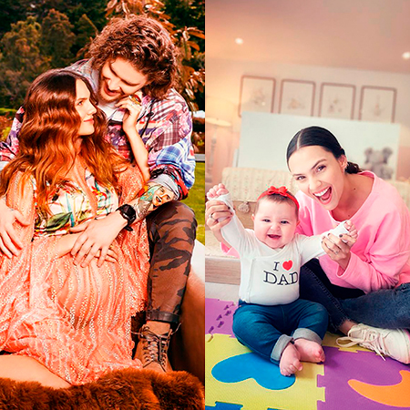
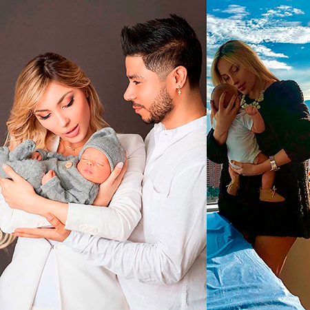
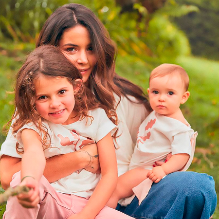
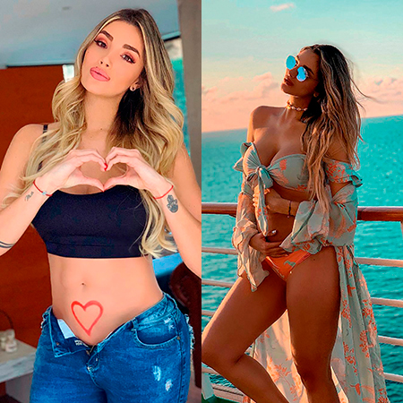

Mamás mamacitas
El ser madre es una de las etapas más significativas de la mujer y en esta ocasión queremos mencionar solo algunas de las muchas madres de la farándula Colombiana que han llevado la maternidad de una forma maravillosa pues además de ser excelentes profesionales en sus carreras son consideradas mamacitas, pues se mantienen tan bellas como siempre.

Danielle Arciniegas
Recientemente hizo parte del elenco de “Loquito por ti” donde se destacó por su papel como hermana del protagonista; se convirtió en la mamá de Ella junto a su esposo “Dim” integrante de la agrupación Piso 21, quien le propuso matrimonio en el baby shower de su hija; tan solo a dos meses de dar a luz recuperó su escultural figura y ahora disfruta de su reciente matrimonio con el amor de su vida.

Anita Beleño
La modelo y diseñadora que fue portada de Revista Boga en nuestra edición número 85 se convirtió en madre en el mes de enero, el padre de su hijo es el cantante Daniel Calderón quien se encuentra muy feliz de ser padre por segunda vez. Anita nos dejó ver en sus redes sociales a su hijo; y demostrando que se puede ser una mamá mamacita.

Maleja Restrepo
No olvidamos sus inicios como presentadora y participante del reality La isla de los famosos donde conoció a su esposo el motocrosista Sebastián “Tatán” Mejía con quien tiene un hermoso matrimonio y dos lindas niñas que son la alegría de esta pareja, por esta razón queremos reconocer la belleza de esta exitosa influencer que conserva su espectacular figura y esa personalidad chispeante y escandalosa como lo dice su esposo.

Melina Ramírez
La presentadora hace unos meses anunció su embarazo junto a su novio Mateo Carvajal, esta sensual mujer dejó claro que las mujeres pueden ser sexys en estado de embarazo y a sus detractores les quedó claro que las mujeres pueden ser lo que quieran ser; con fotografías sensuales y despampanantes, esta nueva mamá no le importa el qué dirán, pues su felicidad es la prioridad en esta nueva etapa.

Estefanía Godoy
La actriz y modelo se apartó un poco de la televisión para dedicarse a su familia y su pequeño hijo Valentín, la esposa del actor Variel Sánchez paso por un doloroso momento el año pasado cuando anunció en sus redes sociales la pérdida de su segundo hijo, pero después de esta gran prueba de la vida anunciaron hace unos meses que un nuevo integrante llegaría a su familia, Estefanía es una mujer excepcional.